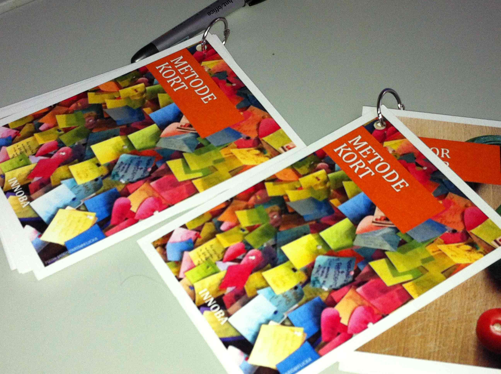

INNOBA ApS
- innovation i praksis
Kontakt:
Rikke Bastholm Clausen
Mob. : +45 31 31 87 76
Adresse:
INNOBA ApS
Mørkhøj Parkalle 2D
2860 Søborg
Danmark
Nyheder:
INNOBA ApS - CVR No. 35 23 10 21
INNOBA er en innovationsvirksomhed. Vi hjælper offentlige og private virksomheder med at planlægge, udvikle og gennemføre innovationsprojekter. Firmaet er specialiseret i brugercentrerede innovationsprocesser fra den første idéudvikling til implementering af nye eller forbedrede services, produkter og processer. Se mere OM OS, hvilke YDELSER vi tilbyder, samt hvilke METODER vi arbejder med her på hjemmesiden – eller kontakt os for en uforpligtende snak på:
innoba@innoba.dk eller +45 31318776.

Hvis du vil have hjælp til:
Brugerinddragelse
Strategi og innovation
Innovationsprojekter
Offentlig-private innovationssamarbejder
- så kontakt INNOBA.
Vi vil meget gerne komme ud og give et par timers gratis sparring. Det lærer vi også noget af!
Brugerinvolvering og facilitering
- Hvordan kan vi få mere glæde af alle vores medarbejders viden, når vi udvikler nye services og produkter?
- Hvordan kan vi løfte vores forretning og organisation ved at inddrage kunder/brugere på nye måder?
- Hvad vil mine kunder have i fremtiden? Hvordan udvikler vi det næste relevante produkt?
- Hvorfor bruger kunder/brugere/borgere ikke mine ydelser p.t.?
- Jeg vil gerne have hjælp til at facilitere idé- og konceptudvikling, der giver konkrete brugbare resultater.
Strategi og innovation
- Hvordan kan man arbejde på forskellige måder med innovation?
- Hvordan arbejder man strategisk med innovation?
- Hvordan udvider jeg min produkter med serviceydelser?
- Hvordan kan vi nytænke vores forretningsudvikling, så vi i højere grad rammer markedet og vores kunders fremtidige behov?
- Hvordan får vi mere systematisk samlet op på vores idéer internt?
Innovationsprojekter
- Hvordan designer jeg et innovationsprojekt?
- Hvordan skaber jeg fremdrift og sikrer innovationshøjde?
- Hvad er de typiske faldgrupper?
- Jeg vil gerne have hjælp til projektledelse.
- Hvordan skaffer jeg penge til et innovationsprojekt?
Offentlig-private innovationssamarbejder
- Hvad er OPI, og hvordan kan vi arbejde med det her hos os?
- Hvordan kan vi i vores offentlige organisation få et samarbejde om innovation op at stå med private virksomheder?
- Jeg mangler hjælp til at få hold på en idé til et innovationsprojekt – og få beskrevet og designet, hvilke faser sådan et projekt kunne planlægges i.
INNOBA er et moderne netværksfirma. Vi arbejder sammen med en række samarbejdspartnere og hiver ekstra medarbejdere og/eller eksperter ind alt efter opgaven. Det gør os meget fleksible og hjælper os til at give vores kunder en god service inden for alle aspekter af innovation – uanset om det er små eller store opgaver.

Vi har løbende samarbejder med advokater, designere, IT-folk mv., som er vandt til at arbejde med innovation og forstår de særlige udfordringer og krav, det medfører. Hvis vores kunder har brug for hjælp på andre områder inden for innovation, end dem vi løser, så hjælper vi meget gerne med kontakten til de bedste på feltet – eller tager dem med som del af projektteamet.
Innovation er et tværfagligt felt, som kræver ekspertise på en lang række områder. Tilgang, metoder og kompetencer skal udvælges til den konkrete udfordring – ikke omvendt.
Vores fokus er på de praktiske løsninger, som kan bruges i hverdagen – snarere end på særligt udvalgte innovationstilgange. Vi sammensætter vores værktøjskasse fra discipliner som servicedesign, design thinking, brugercentreret innovation, medarbejderdreven innovation, antropologisk/etnografiske metoder og strategisk forretningsudvikling.
Samtidig hjælper vi ofte vores kunder med at få et overblik over de mange forskellige innovationsmetoder og lærer gerne fra os, så kompetencen til at arbejde med innovation bliver, når vi går…
Vores ydelser gælder hele spektret omkring innovationsprojekter. Fra fundraising, business cases og den første idé-udvikling til udvikling af helt nye eller markant forbedrede produkter og services. Vi arbejder både på det konkrete og det strategiske niveau og hjælper også vores kunder med innovationsstrategi og processer til innovation på tværs af organisationen. På det strategiske niveau har vi både kompetencer inden for strategi- og policyudvikling i offentlige organisationer (offentlige og halvoffentlige kunder) og kompetencer inden for virksomhedsstrategi og forretningsudvikling (private kunder).
Vi har et særligt fokus på innovationsprojekter, der går på tværs af den offentlige og private sektor. Det gælder offentlig-private innovationsprojekter (OPI) men også projekter i enten den private eller offentlige sektor, der kræver en god forståelse for samspil og modspil i de to sektorer.
Brugerinvolvering og facilitering
- Brugerresearch (etnografisk research, design research, strategisk brugerresearch)
- Idé-generering
- Co-Creation (samudvikling med brugere og/eller medarbejdere)
- Konceptudvikling
- Brugercentrerede prototyper
- Workshop-facilitering
- Brugertests
- etc.
Strategisk innovation
- Innovationsforløb i virksomheder - se produktark
- Innovationsstrategi og opbygning af virksomhederne
- Service design
- Udvilking af business cases
- Strategisk idé-udvikling
- etc.
Ledelse af innovationsprojekter
- Projektdesign
- Projektledelse af hele – eller dele af - innovationsprojekter
- Planlægning og teamledelse
- Sikre fremdrift og det løbende samarbejde
- Projekt-eksekvering i alle faser
- Identifikation af konsortiepartnere
- Fund Raising
- etc.
Innovationsrådgivning:
- Offentlige-privat innovationssamarbejde (OPI)
- Innovationsmetoder
- Innovationsstrategi
- Metoder til brugerinvolvering
- Projektdesign for innovationsprojekter
- Design Thinking
- Servicedesign og serviceinnovation
- etc.
Eksempler på kunder:
Munin Spot Technology, Eglu, Caretag, Cowi, Nordisk Ministerråd, Innovationsnetværk Livsstil – Bolig og Beklædning, Aalborg Universitetshospital, Københavns Kommune, Center for Sundhedsinnovation, Region Hovedstaden, Danish Design Association, Service Platform, Rigshospitalet og DI-ITEK.
Vi sammensætter vores værktøjskasse fra discipliner som servicedesign, design thinking, brugercentreret innovation, medarbejderdreven innovation, antropologisk/etnografiske metoder og strategisk forretningsudvikling.
Her er nogle eksempler på metoder, vi ofte bruger, i forskellige faser af innovationsprojekter. Download INNOBAs metodekort her
Domsten.dk
INNOBA samarbejder med virksomheden Domsten.dk om at tilbyde virksomheder innovationsrådgivning og intensive innovationsforløb. Domsten.dk er særdelse stærk på områderne teknologiudvikling og topledelse. I en kombination med INNOBAs innovationskompetencer mener vi at have et meget stærkt udgangspunkt for at hjælpe specielt virksomheder med teknologiafhængige/teknologitunge produkter med produktudvikling og innovation.
Links: pressemeddelelse og produktark
Rønne & Lundgren
INNOBA samarbejder løbende med advokatfirmaet Rønne & Lundgren, der bl.a. er specialiseret i rådgivning om de juridiske aspekter ved OPI-projekter. Advokatfirmaet har i samarbejde med Statsadvokaten udarbejdet standardaftaler for OPI-projekter. Læs mere her
Rønne & Lundgren har ca. 100 ansatte og er et af Danmarks førende advokatfirmaer. De har stor ekspertise og mangeårig erfaring inden for rådgivning af internationale koncerner og børsnoterede virksomheder, små og mellemstore virksomheder, offentlige myndigheder, organisationer og andre relevante aktører om alle arbejds- og ansættelsesretlige forhold.
Der er en række klassiske juridiske overvejelser, der skal gøres, når offentlige og private indgår samarbejder om innovation. Det drejer sig oftest om udbudsregler, inhabilitet, statsstøtteregler og IPR. INNOBA har dybdegående kendskab til de typiske opmærksomhedspunkter men henviser til egentlig juridisk bistand for den videre rådgivning, kontraktudarbejdelse, mv.
22. august 2013
Ny medarbejder hos INNOBA
INNOBA byder velkommen til Line Sigaard Kjær, som vil være hos INNOBA hele efteråret frem til jul. Line læser digital design og kommunikation på IT- Universitetet og vil sideløbende med sin ansættelse I INNOBA skrive speciale om brugerdreven innovation indenfor sundhedssektoren.
Line har stor teknisk og sociologisk viden om, hvordan man tænker tekniske muligheder sammen med brugernes behov indenfor innovation. Derudover har hun en baggrund indenfor grafisk design og ideation.
I INNOBA kommer Line til at bidrage til workshopfacilitering, brugerinvolvering, konceptudvikling og design.
16. august 2013
INNOBA i DI
Vi er blevet medlem af Dansk Industri. Læs mere om DI her.
9. august 2013
Vi underviser i co-creation
INNOBA er blevet inviteret til at deltage som underviser og facilitator i Business Booster. DDA og Manto udbyder sammen et udviklingsforløb for designvirksomheder med fokus på forretningsudvikling. Der afholdes i alt 8 heldagsworkshops med forskellige temaer. INNOBA står for workshoppen om co-creation d. 20. august.
Kursusdagen vil indeholde oplæg om potentiale og muligheder ved co-creation, case-eksempler, øvelser samt inputs om konkrete værktøjer.
Vi glæder os til at videndele om vores erfaringer med co-creation!
Se mere om kurset her.
3. juli 2013
Behov for sporing af varer på hospitaler
INNOBA fungerer som overordnet projektleder samt ansvarlig for brugerinddragelse i Aalborg på projektet Healthcare Asset Tracking, HAT. HAT-projektet har til formål at teste en software- og hardwarebaseret sporingsløsning på 2 hospitaler: Herlev Sygehus og Aalborg Universitetshospital. Projektet tager udgangspunkt i brugerbehov og arbejdsgangsanalyser for at teste og tilpasse en skræddersyet sygehusløsning.
Første fase af projektet er nu afsluttet, og vi er færdig med at afdække arbejdsgange og brugerbehov på 3 vareområder på Aalborg Universitetshospital. Sammen med Idé-klinikken har vi gennemført ca. 30 interviews og en række observationer for at se, hvordan kørestole, blodposer og celle-vævs-prøver bevæger sig rundt på hospitalet. På den baggrund er der nu samlet op på, hvilke behov forskellige typer af brugergrupper har for elektronisk sporing af de tre produkttyper. Virksomheden Munin Spot Technology skal nu sætte udstyr op rundt omkring på hospitalet, så vi kan pilotteste, hvordan en trådløs sporingsløsning kunne fungere.
INNOBA vender i efteråret tilbage til Aalborg Universitetshospital for at lave en række deltagende observationsstudier af brugernes interaktion med den elektroniske løsning samt yderligere anbefalinger til tilpasning af funktionalitet og brugerinterface.
Links: 3 rapporter om brugerbehov.
3. juli 2013
Fremtidens forskning på Kolding Designskole
Vi er nylig vendt tilbage fra en spændende heldagsworkshop i Kolding med en lang række førende forskere på design- og innovationsområdet. INNOBA var blevet bedt om at facilitere en dag, hvor Kolding Designskoles forskningsteam kunne brainstorme på, hvordan de skal arbejde strategisk med forskning de næste 2 år. Sammen med forskningschef Irene Lønne havde vi lagt et detaljeret program for dagen, hvor teamet kom igennem alle niveauer i en samlet strategi samt idé-udviklede ift indsatser og ambitioner. Selvfølgelig skulle der anvendes visuelle designværktøjer i processen. INNOBA arbejdede derfor tæt sammen med designstuderende fra Designskolen om at udvikle et sæt templater og materiale til workshoppen, som bagefter kan bruges til at dokumentere resultaterne. Materialet hænger nu på væggen uden for forskernes kontorer som et levende full size dokument, man løbende kan arbejde videre med.
3. juli 2013
Fundraising og brugerinddragelse til produkt- og softwareudvikling
INNOBA hjalp sidste år Rigshospitalet og virksomheden Caretag med at søge fondsmidler til et projekt om sporing af kirurgiske instrumenter. En sporingsløsning vil bl.a. kunne spare tid på operationsafdelinger til optælling af instrumenter før og efter en operation samt på sterilcentraler, når instrumenterne skal autoklaveres (rengøres). Projektet har nu fået 2,6 mio. kr. ud af et samlet budget på 4,5 mio. kr. til at markedsteste en løsning på 4 af landets hospitaler. Vi er blevet bedt om at varetage brugerinddragelse og brugertests til efteråret. Det glæder vi os meget til!
3. juli 2013
Markedsanalyse og feasibility studier for oplevelsesinstitution
Medarbejdere fra INNOBA bidrager på en fortrolig opgave for en oplevelsesinstitution i Danmark, der ønsker at udbygge sine aktiviteter, herunder tænke institutionens fremtid sammen med byudvikling og større fysiske rammer. Vi har set på markedssituationen, indtjeningspotentiale og forskellige strategiske tilgange til at møde brugernes og potentielle kunders behov.
3. juli 2013
Nyt samarbejde med Domsten.dk om teknologitung innovation
Vi er glade for at kunne meddele, at INNOBA har indgået et samarbejde med virksomheden Domsten.dk om at tilbyde virksomheder innovationsrådgivning og intensive innovationsforløb. Domsten.dk er særdelse stærk på områderne teknologiudvikling og topledelse. I en kombination med INNOBAs innovationskompetencer mener vi at have et meget stærkt udgangspunkt for at hjælpe specielt virksomheder med teknologiafhængige/teknologitunge produkter med produktudvikling og innovation.
Links: pressemeddelelse og produktark
25. juni 2013
INNOBA i DDA
Vi er blevet medlem af Danish Design Association. Læs mere om DDA her.
20. juni 2013
INNOBA holder kursus om brug af design til visuel kommunikation og innovation
12. september 2013 deltager INNOBA som gæsteoplægsholder på et kursus om visuel kommunikation og design. Kurset udbydes af Dansk Kommunikationsforening og afholdes i samarbejde med Irene Lønne fra Kolding Designskole. Vi glæder os til at dele ud af viden om, hvordan man arbejder med designere, bliver mere målrettet med visuel kommunikation, og hvordan man kan bruge designmetoder og visuel kommunikation på nye måder - bl.a. i innovationsprojekter og til produkt- og serviceudvikling.
Se om kurset er noget for dig her
17. juni 2013
Ny designer hos INNOBA
Vi byder velkommen til Stephanie Pitarch, som vil være hos os i juni måned for at hjælpe med design og workshopfacilitering. Stephanie er uddannet industriel designer og har stor erfaring med innovationsprojekter fra bl.a. tidligere ansættelse i Center for Sundhedsinnovation.
14. juni 2013
Brugercentreret softwareudvikling
INNOBA deltog på årets RFID DK konference med et oplæg om brugercentreret test og tilpasning af software. Læs mere om workflowanalyse, blueprints, design research og effektmåling på linket her. Læs også om projektet Healtchcare Asset Tracking. INNOBA varetager den faglige projektledelse af HAT-projektet, ligesom vi står for brugerinddragelse og brugertests i samarbejde med Videncenter for Innovation og Forskning, Idé-klinikken og Alectia. Projektet er et OPI projekt støttet af Fornyelsesfonden med projektpartnerne Munin Spot Technology (projektejer), Insero, InformiGIS, Herlev Hospital, Aalborg Universitetshospital, Regionslageret og Regionsapotektet i Region Hovedstaden samt Alectia, IDK og VIF.
Links: